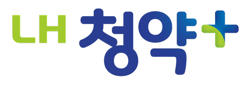
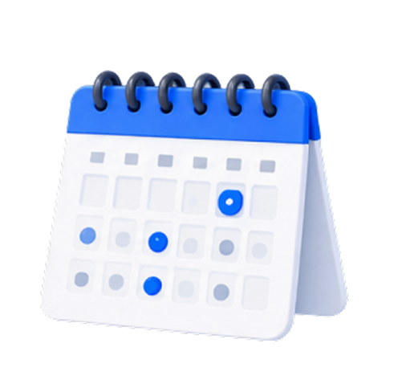
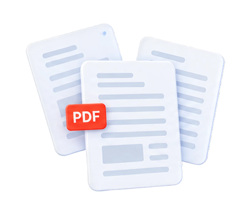
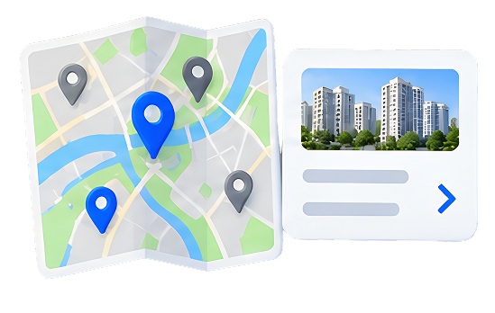
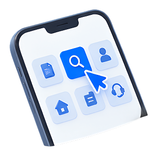
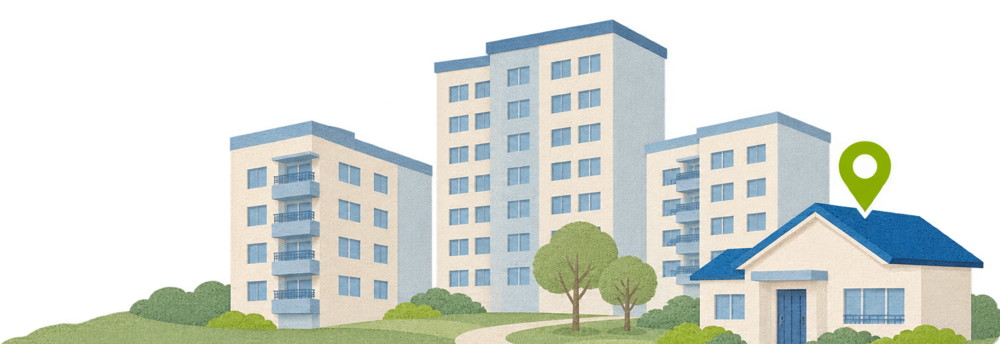
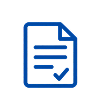
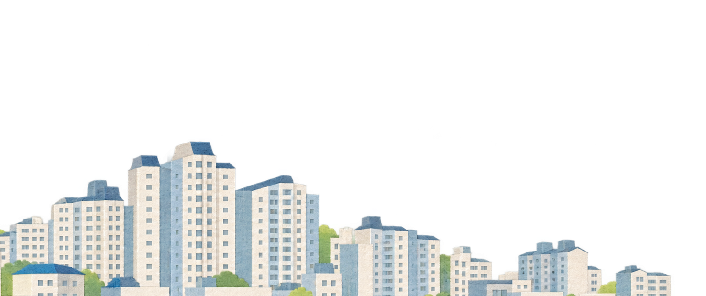

사회초년생 · 25세
처음 하는 청약, 무엇부터 준비해야 할지 모르겠어요.

주거 지원은 필요하지만, 청약 용어부터 배워야 했습니다.

복잡한 일정공고마다 다른 일정과 마감 정보

어려운 용어와 방대한 서류공고문을 읽어도 알기 어려운 신청 조건

흩어진 정보지역과 조건을 함께 비교하기 어려운 화면

나에게 맞는 공고는?반복해서 확인해야 하는 신청 자격
처음 하는 청약, 무엇부터 준비해야 할지 모르겠어요.
내 조건에 맞는 공고만 모아서 빠르게 보고 싶어요.
함께 준비하는 서류와 일정을 한눈에 보고 싶어요.
긴 공고문 대신 중요한 내용을 쉽게 알려주세요.
복잡한 가입 없이 내 휴대폰에서 서명하고 싶어요.
놓치는 일정 없이 차근차근 준비하고 싶어요.

내 조건에 맞는 공고부터 신청 준비까지, 필요한 정보를 하나의 흐름으로 연결합니다.
매번 비교해야 하는 자격과 조건
내 조건에 맞는 공고를
가장 먼저 확인할 수 있도록
직접 해석해야 하는 어려운 정보

Easy to understand어려운 용어와 복잡한 절차를
누구나 이해하기 쉬운 안내로
흩어져 있는 서류와 신청 일정
확인에서 준비와 신청까지
자연스럽게 이어지는 경험
맞춤 공고 요약
오늘 해야 할 일
관심 공고
빠른 메뉴
맞춤 조건 설정
공고 리스트
공고 상세
서류 준비
가족 서명 요청일정 달력
청약 일정
나의 신청 현황
알림 설정
지역 검색
지도에서 찾기
주택 정보
관심 주택
나의 정보
신청 내역
저장한 공고
서류 관리
신뢰를 주는 블루와 편안한 그린
복잡한 정보도
편안하게 읽을 수 있도록
내 조건에 맞는 공고를 바로 확인하고
관심 있는 공고는 저장할 수 있어요.
다가오는 일정과 준비해야 하는 서류를
한눈에 확인하고 놓치지 않도록 도와줘요.
자주 사용하는 메뉴를 모아서
필요한 정보에 빠르게 도착할 수 있어요.

어려운 공고문 대신 핵심 정보를 쉽게 확인하고,
내 조건에 맞는 준비를 시작할 수 있어요.
✓ 주민등록표등본
✓ 가족관계증명서
✓ 개인정보 수집·이용 동의서
✓ 금융정보 제공 동의서
준비된 서류는 체크해 주세요.준비해야 할 서류부터 다가오는 신청 일정까지,
한곳에서 확인하고 차근차근 준비할 수 있어요.
달력에서 신청과 서류 제출 일정을 한눈에 확인해요.
필요한 서류를 체크하고 준비 상황을 관리해요.
앱 설치와 복잡한 가입 없이, 내 휴대폰으로 간편하게.
가족에게 링크를 보내고 필요한 서명을 요청해요.
요청부터 완료까지 진행 상황도 한곳에서 확인할 수 있어요.
메신저로 간편하게 서명 요청을 전달해요.
링크를 열고 내용을 확인해요.
화면 위에 자연스럽게 서명해요.
요청부터 완료까지 확인해요.
서명 완료 여부를 안내해요.
조건 설정부터 공고 탐색, 일정과 서류 준비까지.
사용자의 흐름에 따라 화면을 연결하고 실제로 반응하는 인터페이스로 구현했습니다.
정보를 더하는 것보다, 필요한 순간에 필요한 정보를 연결하는 데 집중했습니다.
낯선 청약 과정이 누구에게나 이해하기 쉬운 경험이 되도록,
내 조건에 맞는 공고와 다음 행동을 하나의 흐름으로 설계했습니다.